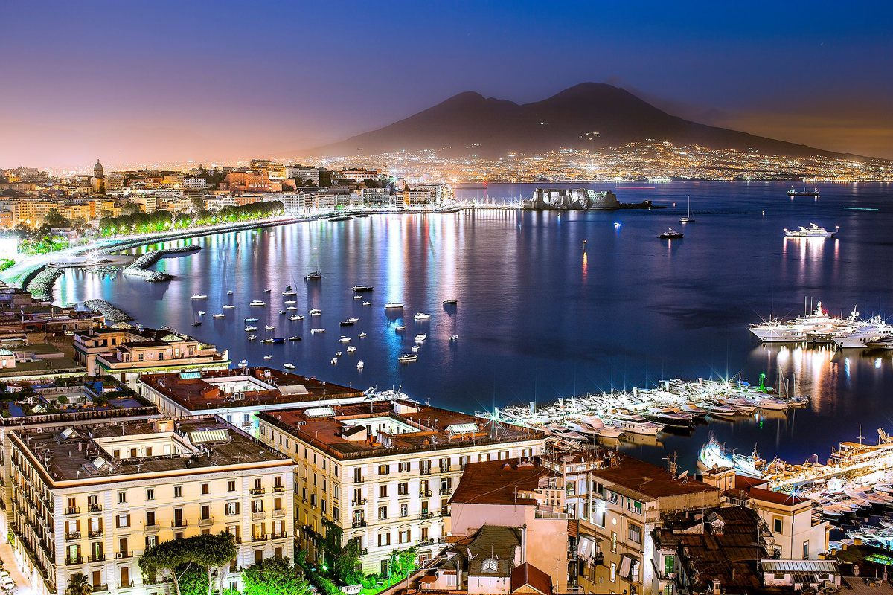
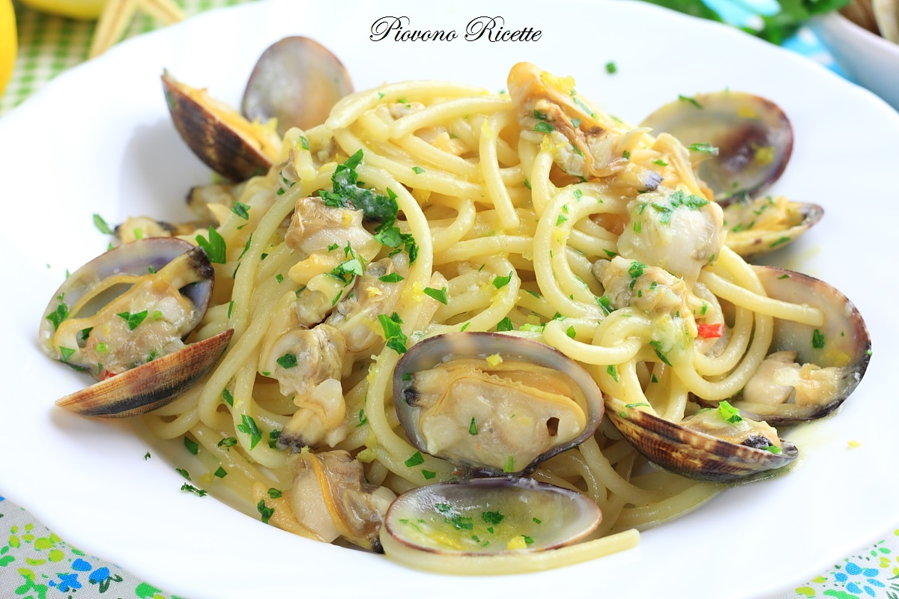

CAMPANIA

Campania-terra di pizza, limoni e passione
La cucina campana è un’esplosione di gusto, colore e passione. Famosa in tutto il mondo per la pizza napoletana, affonda le sue radici nella tradizione contadina e marinara.
Dai pomodori del Vesuvio alla mozzarella di bufala, dalla pasta di Gragnano ai profumi della pastiera e del babà,
ogni piatto racconta una storia d’amore per la terra e per la tavola.Una cucina semplice, genuina e profondamente legata al territorio.
SPECIALITA'

PIZZA NAPOLETANA
Descrizione:
La Pizza Napoletana è uno dei simboli più amati della cucina italiana. Nata a Napoli tra la fine del '700 e l'inizio dell'800,
si distingue per il suo impasto morbido e leggero, la base sottile e il cornicione alto e alveolato.
Gli ingredienti tradizionali sono pochi ma selezionati: pomodori San Marzano DOP, mozzarella di bufala campana DOP, basilico fresco e olio extravergine d’oliva.
Viene cotta in forno a legna a temperature molto alte, per ottenere una pizza fragrante e digeribile.
Curiosità:
Nel 2017, l’arte del pizzaiuolo napoletano è stata riconosciuta come Patrimonio culturale immateriale dell’umanità UNESCO.
La più celebre è la Pizza Margherita, dedicata nel 1889 alla regina Margherita di Savoia, con i colori della bandiera italiana:
rosso (pomodoro), bianco (mozzarella) e verde (basilico).

SPAGHETTI ALLE VONGOLE
Descrizione:
Gli Spaghetti alle Vongole sono un piatto tipico delle zone costiere della Campania, in particolare di Napoli e del Cilento.
La preparazione tradizionale prevede spaghetti al dente conditi con un sugo semplice a base di vongole veraci, aglio, olio extravergine d'oliva e prezzemolo fresco.
Ne esistono due varianti: in bianco, più delicata, e con pomodorini freschi, leggermente più intensa.
Curiosità:
In molte famiglie napoletane, gli spaghetti alle vongole sono immancabili durante la cena della Vigilia di Natale, rigorosamente senza carne.
Un “segreto” tradizionale per il sapore perfetto? Usare l’acqua filtrata delle vongole per creare un fondo di cottura saporito e naturale.

PASTIERA NAPOLETANA
Descrizione:
La Pastiera Napoletana è un dolce tipico della Pasqua partenopea, ma amato tutto l’anno.
Si tratta di una crostata profumata con un ripieno cremoso a base di grano cotto, ricotta di pecora, uova, zucchero, canditi e acqua di fiori d’arancio.
Il guscio di pasta frolla racchiude un cuore morbido e aromatico, dal sapore delicato e inconfondibile.
Ogni famiglia custodisce la propria versione, con piccole variazioni tramandate da generazioni.
Curiosità:
Secondo la leggenda, la Pastiera fu inventata dalle sirene del Golfo di Napoli per incantare i marinai con il profumo dei suoi ingredienti.
In realtà, ha origini antiche e si collega a riti pagani di primavera e abbondanza.
La tradizione vuole che venga preparata alcuni giorni prima di Pasqua, per permettere ai sapori di amalgamarsi al meglio… e diventare irresistibile.
CARTA DEI VINI
TAURASI DOCG
Descrizione:
Il Taurasi è un prestigioso vino rosso campano a Denominazione di Origine Controllata e Garantita (DOCG),
ottenuto da uve Aglianico coltivate sulle colline della provincia di Avellino. È un vino strutturato, dal colore rubino intenso,
con note di frutti rossi, spezie, cuoio e tabacco, che si affinano con il tempo. Grazie alla sua complessità e alla lunga capacità di invecchiamento,
è considerato uno dei grandi rossi italiani.